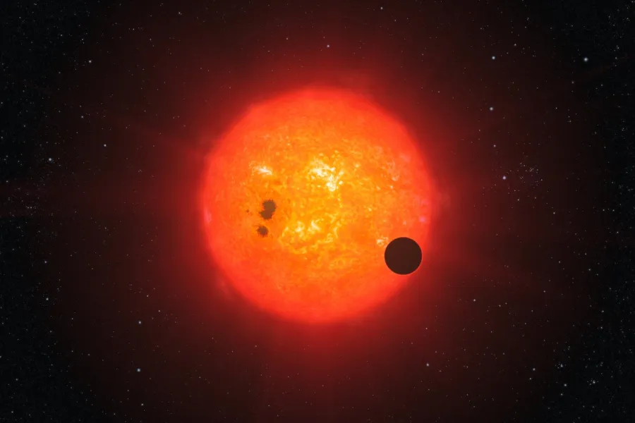

16. Dezember 2009
GJ 1214 b: Supererde mit dichter Atmosphäre
Das MEarth-Projekt entdeckte GJ 1214 b, als der Planet vor seinem kleinen, nur 40 Lichtjahre entfernten Stern vorbeizog. Mit dem HARPS-Spektrografen der ESO wurde die Masse bestimmt: etwa sechs Erdmassen bei 2,7 Erdradien. Nach CoRoT-7b war es die zweite Supererde mit bekannter Masse und bekanntem Radius.
Weil der gemessene Radius größer ist, als Modelle vorhersagen, schlossen die Forschenden auf eine dichte, etwa 200 Kilometer dicke Atmosphäre – die erste bei einer Supererde. Der Planet umrundet seinen Stern alle 38 Stunden und ist an der Oberfläche vermutlich rund 200 Grad Celsius heiß.
Quelle: ESO: "Astronomers Find World with Thick, Inhospitable Atmosphere and an Icy Heart", 16.12.2009